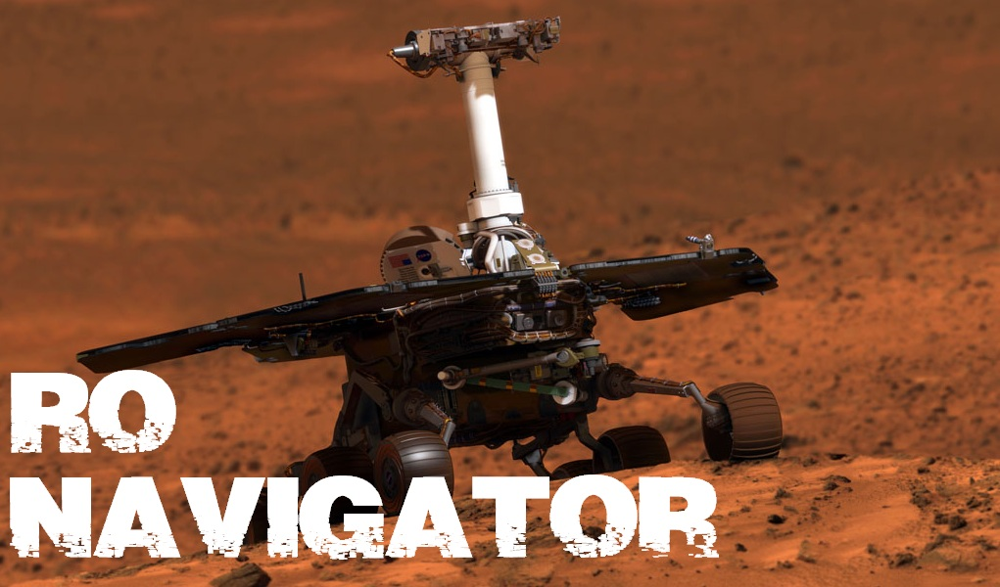

AUTONOMOUS BOTS have been the talk of town for quite some time. Autonomous Bots have found their way into many spheres of modern day technology. Be it the unmanned drones of US army, or NASA’s Curiosity, all were conceptualised from the basic concept of AUTONOMOUS BOTS.
The robot has to follow a Black Line over a White Background and successfully reach the finishing point from the starting point without being manually assisted by any person. The entire path of the robot is indicated by a central BLACK line. The robot is required to follow this line along its way.
Let’s Raise the stakes a bit higher!
Maximum allowable bot length would be 25cm X 25cm.
Width of the central line would be 2cm.
Central line and the background will have a sharp contrast. Central line will be darker in colour.
Width of checkpoint line, 90 degrees to the point of intersection with the central line would be 2cm and length would be 25cm(Subject to change).
The score must remain positive at all times. One time 1000 points is awarded in the first round and 10 points are deducted for every ten seconds, rounded off to the next higher ten second block at the end of the event.
AUTONOMOUS BOTS have been the talk of town for quite some time. Autonomous Bots have found their way into many spheres of modern day technology. Be it the unmanned drones of US army, or NASA’s Curiosity, all were conceptualised from the basic concept of AUTONOMOUS BOTS.
Line Following is one of the simplest tasks that an autonomous bot can perform. We have made this simple task a little more challenging for you!
So get ready with your AVRs and Arduinos, if you have the guts for it!
Event Description
This is a team event involving an autonomous bot, which will follow a BLACK Line over a WHITE background without any manual assistance of any kind.
Problem Statement
The robot has to follow a Black Line over a White Background and successfully reach the finishing point from the starting point without being manually assisted by any person. The entire path of the robot is indicated by a central BLACK line. The robot is required to follow this line along its way.
The entire path of the robot is divided into distinct regions. These regions are demarcated by intersections in the form of Black Lines perpendicular to the central Black Line. Depending on the level or round, the robot may have to indicate the region it is passing through by counting the number of intersections.
A robot failing to follow the line, and wandering away or falling off the board in any of the rounds will have to start from the last detected checkpoint in Prelims. Detection of checkpoints will be awarded as bonus.
Event Rounds
- ROUND 1: PRELIMS
- ROUND 2: FINALS
Prelims
In this round the robot has to traverse the arena, starting from the starting line and has to reach the finishing line, while following the Central Black Line. The robot doesn’t need to indicate the region its passing through and no extra points would be awarded for the same. However the robot has to successfully cross 2 checkpoints, detection of the same, if indicated by lighting a LED, sounding a buzzer or in any other way acceptable by the event coordinator, shown previously during the test-run will be awarded with bonus points in this round, but it’s not compulsory. Top teams move to the final round. The robot should traverse the entire path and complete this round within a maximum of fifteen minutes or earlier whichever permits the score to remain positive.
Arena for Prelims

*This is a rough draft. Exact Dimensions may vary.
Finals
Let’s Raise the stakes a bit higher!
The arena for the FINAL Round would be disclosed on the day of the FINALS. All the finalists would be informed about the arena and its corresponding arena specific rules and regulations after the Prelims. The general rules would be same for both the arena.
Participants can be assured that, the finals arena wouldn’t require any specific hardware changes in the bot, only the programming logic would need modifications.
The top 3 teams would be separately awarded!
Event Specifications
Arena Specifications
The arena is about 7ft X 6ft and may be subject to certain simplifications as compared to the one illustrated in this document, however nothing to affect the overall design. No elements other than the track will be marked in the arena.
Qualification Rules
- A robot will be allowed a maximum of 3 restarts, failing which the team will be disqualified.
- Before starting the round, participants can request for a 15 minute test run, after which no other requests for test-run will be entertained.
- No requests for a second test-run will be entertained even if the first test-run took less than 15 minutes.
- If the robot fails to follow the line/falls off the arena or requests a restart, the robot has to start from its last fully passed checkpoint.
- A team can consist of a maximum of four students from the same institution.
- A single participant can be present in only one team.
- Each member of the team must bring their own college ID cards.
- Teams will require to register themselves in the registration counter before they can participate in the event.
- Use of LEGO kits is strictly prohibited and will lead to disqualification.
- Any kind of damage to the arena or any action leading to the discolouration of the arena will lead to immediate disqualification.
Scoring

The score must remain positive at all times. One time 1000 points is awarded in the first round and 10 points are deducted for every ten seconds, rounded off to the next higher ten second block at the end of the event.
Event Co-ordinators
Titas Datta
9007969101